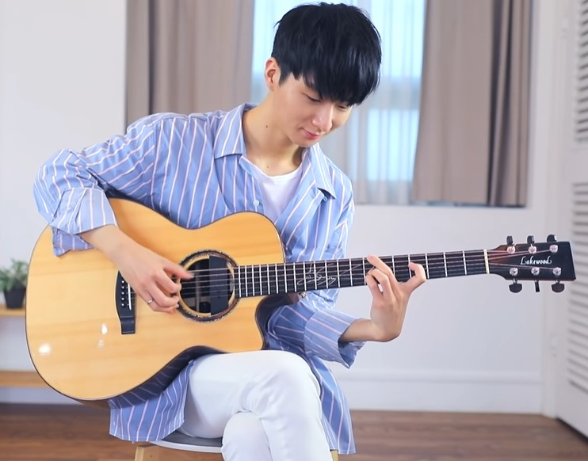
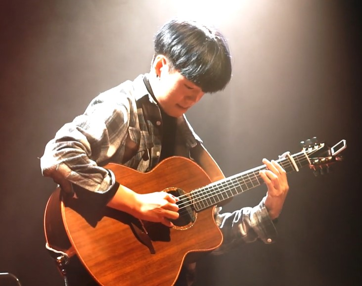

韓式指彈
-

Sungha Jung
Sungha Jung (鄭晟河)，1996年出生於韓國，為現今最受人注目的新生代吉他演奏家之一。 從一開始的單純改編，到後來鄭晟河也開始大量產出原創作品，每首都為人稱道！從9歲學琴至今，他已成功擄獲全世界樂迷的心，並且獲得眾多吉他演奏界大師如Tommy Emmanuel、Ulli Bögershausen、押尾光太郎的讚賞。 鄭晟河年紀輕輕就已到世界各地巡迴，並與多位知名樂手、藝人合作演出，如今他已經是一位指彈界人人皆知的演奏家了！
-
Zairo
Zairo (Ahn Jung Jae)，出道前，即以吉他指彈和編曲聞名，相繼同金建模、李孝利、2NE1、SISTAR等著名藝人合作。Zairo曾在李珍雅樂隊擔任吉他手。
大學畢業後曾準備與同窗金珉碩、鄭同桓一起作為MeloMance組合出道，但由於其吉他指彈能力可能在作組合伴奏時被埋沒，最終選擇了單獨活動。 2017年5月30日，Ahn Jung Jae以藝名Zairo（韓語：자이로）發行首張吉他彈指正規專輯《New Generation》正式出道。 -

Kim Youngso
Kim Youngso，2019年韓國JTBC超級樂隊優勝組Hoppipolla吉他手。2015年Kim Youngso第一次接觸吉他，並從古典鋼琴專攻轉為吉他；
學習吉他的歷程中屢屢獲取世界各大獎項，展現了其不凡的天賦，並於2019年，以Like a star一曲奪下 Morris日本指彈大賽冠軍轟動指彈界，也使得Like a star 一曲成為當今指彈神曲！ 而同年，也成為"超級樂隊"一員，與樂隊成員一起展開專輯釋出、世界巡演等活動。